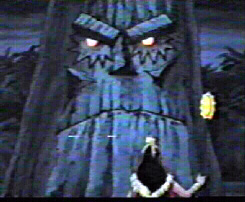

Villains in
Apocalypse
Real Name: En Sabh Nur
Appeared in:
Season One: The Cure, Come the Apocalypse
Season Two: Time Fugitives, Parts I and II
Season Three: Obessesion
Season Four: Sanctuary Part II, Beyond Good and Evil 4 Parter
Season Five: The Fifth Horseman
Voiced by: James Blendik
Dark Phoenix

Real Name: Jean Grey
Appeared in:
Season Three: Dark Phoenix Saga 4 Parter
Voiced by: Catherine Disher
D'Ken
Real Name: D'ken
Appeared in:
Season Three: The Phoenix Saga 5 Parter
Garok
Real Name: Garok
Appeared in:
Season Three: Savage Land, Strange Heart, Parts I and II
Graydon Creed

Real Name: Graydon Creed
Appeared in:
Season Two: Till Death Do Us Part, Parts I and II; Time Fugitives, Part
I and II; Beauty and the Beast
Season Five: Bloodlines
Voiced by: John Stocker
Juggernaut
Real Name: Cain Marko
Appeared in:
Season One: The Unstoppable Juggernaut
Season Three: The Phoenix Saga Parts 3 and 5: Dark Shroud, Cry
of the Banshee; The Juggernaut Returns
Voiced by: Rick Bennett
RETURN TO X-MEN'S INTRODUCTION PAGE